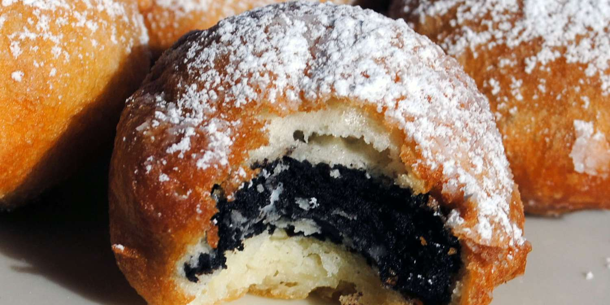

Sweet Deep Fried Oreos

Description
The crispy batter, crunchy cookie, and creamy filling
combine to make one of the world's most decadent fair
foods. "This is a carnival favorite where I grew up,"
says Olivia C. "Oreos get dipped into pancake batter
and fried—yummy! You can do this with or without a
deep fryer."
Ingredients
- 2 quarts vegetable oil for frying
- 1 cup milk
- 1 large egg
- 2 teaspoons vegetable oil
- 1 cup pancake mix
- 1 pack of Oreos
Steps
- Heat oil in a deep fryer or large saucepan to 375 degrees F (190 degrees C).
- Whisk milk, egg, and 2 teaspoons of vegetable oil in a large bowl until smooth.
- Stir in the pancake mix until no dry lumps remain
- Dip cookies into batter, one at a time, and carefully place into hot oil.
- Fry in batches, 4 or 5 at a time, until cookies are golden brown, about 2 minutes.
- Drain on a paper tower-lined plate before serving.